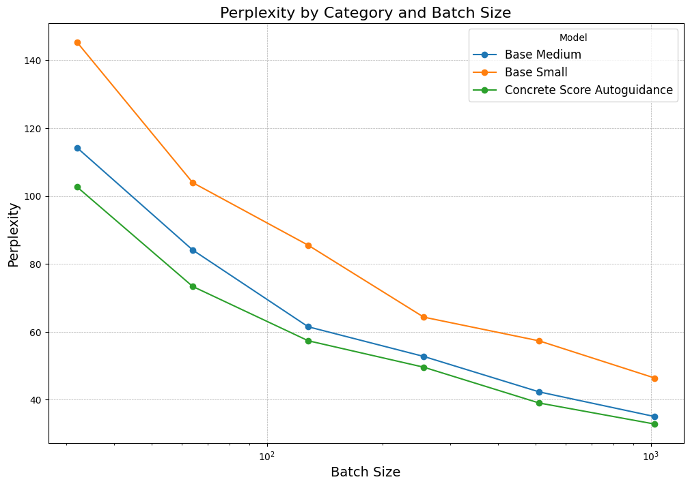
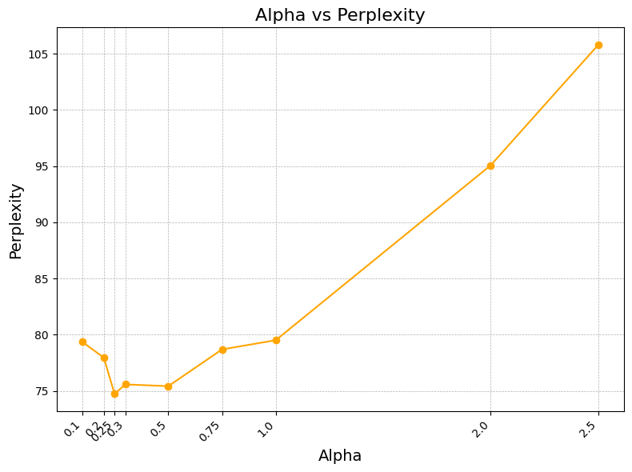

Diffusion-based approaches have excelled in domains such as image [1], video [2], and audio [3]. They're noted for their ability to controllably generate realistic, high-fidelity samples. However, in language modeling, the predominant approaches are all autoregressive in nature. While currently state-of-the-art, autoregressive (AR) approaches suffer from some problems:
There have been several works attempting to use diffusion-based approaches in the language modeling space, but there still exists a performance gap between diffusion and AR language models, in terms of raw log-likelihoods. This gap has narrowed over the past few years, but at best, diffusion language models are competitive with older AR models like GPT-2 [5] [6] on certain tasks. There still exists a significant gap between the best diffusion language models and the best AR models on metrics like generative perplexity, even when controlling for model parameter count and training tokens, which suggests weaknesses in modeling capabilities alone.
How can we (plainly) get better at modeling? Besides scaling and training on better data, much work has been done to improve generation quality across both the AR language modeling and diffusion spaces. In particular, we focus primarily on two techniques:
These similar techniques have both shown promise for generating better samples in their respective domains.
In this article, we’ll investigate the connections between these two perspectives on guidance. We explore their applications to diffusion language models, and show significant improvements in unconditional generation without any additional training. In particular, we’ll discuss:
Diffusion modeling, in its classical formulations [1, 9, 10], operates over continuous domains, where we can define the noising and denoising processes continuously. Adapting this to work over a discrete domain, like text, is nontrivial. There are multiple approaches [6, 11], but we focus on Lou et al.’s approach, which they call Score Entropy Discrete Diffusion (SEDD). We summarize their approach here, and a more detailed treatment is given in their paper.
SEDD approaches the modeling task from the perspective of score matching [12], which approximates a continuous distribution \(p\) by learning the score function \(\nabla_x \log p(x)\). In a discrete space, since gradients become finite differences, the equivalent of the score function can be written as \[\frac{p(y) - p(x)}{p(x)} = \frac{p(y)}{p(x)} - 1.\] The quantity \(p(y)/p(x)\), which is a probability ratio between two sentences, is defined as the concrete score, and can be approximated by a neural network \(s_\theta(x)_y\).
To train this neural network \(s_\theta(x)_y \approx p(y)/p(x)\), SEDD adapts the cross-entropy loss \[\mathbb{E}_{y\sim p}[-\log p_\theta(y)] = -\sum_y p(y)\log p_\theta(y)\] and defines a new loss function, called the score entropy: \[\sum_{y} \left(s_\theta(x)_y - \frac{p(y)}{p(x)}\log s_\theta(x)_y\right)\] (up to a normalizing constant). While this loss is intractable (it requires regressing to the scores \(p(y)/p(x),\) which are unknown to us), SEDD, like the original score matching literature, treats \(y\) and \(x\) as samples from the denoised distributions of some base distribution \(p_0\), and instead uses the denoising score entropy loss \[\mathop{\mathbb{E}}_{\substack{x_0\sim p_0 \\ x\sim p(\cdot\mid x_0)}} \left[\sum_{y\neq x} \left(s_\theta(x)_y - \frac{p(y\mid x_0)}{p(x\mid x_0)}\log s_\theta(x)_y \right)\right].\]
How can we use the learned scores to actually generate samples? Much like the original formulation of diffusion, SEDD defines a forward and reverse diffusion process, which give rise to a family of distributions \(p_t\) for \(t\in\mathbb{R}^{\geq0}\) (where \(p_0 \approx p_{\text{data}}\)). Since our domain is discrete, the process is defined in terms of diffusion matrices \(Q_t\) such that \[dp_t/dt=Q_tp_t.\] To ensure that there is a stationary distribution as \(t\rightarrow\infty\), the matrices \(Q_t\) are constrained to be within a scalar factor of some base matrix \(Q\), such that \(Q(t)=\sigma(t)Q\) for some \(\sigma(t)\in\mathbb{R}.\)
The reverse diffusion process can be derived as \[dp_{T-t}/dt = \bar{Q}_{T-t}p_{T-t},\] where \(\bar{Q}_t(y,x)=\frac{p_t(y)}{p_t(x)}Q_t(x,y).\) This scaling factor, which gives us the reverse process, is precisely the scores that we learn using the denoising score entropy loss \(\mathcal{L}_{\text{DSE}}\)!
In particular, we could simply use Euler’s method as an ODE solver to approximate the reverse process. For a given step size \(\Delta t\), we have \[p(x_{t+\Delta t} = y\mid x_t=x) = \delta_{xy} + \frac{p_t(y)}{p_t(x)}Q_t(x,y)\Delta t + O(\Delta t)^2,\] where \(\delta\) is the Kronecker delta.
While simulating the reverse process works in theory, modeling scores and transitions in practice becomes difficult. Language may be a discrete space, but it is a large discrete space! For example, GPT-2’s vocabulary size is 50,257; newer models, like GPT-4 and LLaMa-3, have even larger vocabulary sizes upwards of 100K tokens. The number of sequences that can be made of these tokens is exponential in the vocabulary size. To address this, SEDD makes two key simplifications.
The first simplification is that approximating scores for all possible pairs of sequences \((x_1\ldots X_L,y_1\ldots y_L)\) is intractable. SEDD simplifies this by only modeling the scores between sequences that differ by only one token, and ignoring the others. Letting \(L\) be the sequence length and \(N\) the vocabulary size, this cuts the number of scores \(s_\theta(x)\) we need to calculate for a given \(x\) from \(N^L\) (all possible sequences) to \(LN\) (all sequences that differ by only one token): a tractable size. We factorize the forward transition in terms of these per-token transitions.
Equivalently, instead of considering an entire diffusion matrix \(Q_t(x, y)\) (with \(N^{2L}\) entries!), we only need to consider a diffusion matrix \(Q_t^{\text{tok}}\) that perturbs tokens independently, such that it has size \(N^2.\)
Still, this matrix is too large to materialize efficiently for large vocabulary sizes at the 100K scale; the second simplification constrains \(Q\) to be within a special structure. In particular, we consider the version of SEDD that uses the transition matrix \[Q^{\text{absorb}} = \begin{bmatrix} -1 & 0 & \cdots & 0 & 0 \\ 0 & -1 & \cdots & 0 & 0 \\ \vdots & \vdots & \ddots & \vdots & \vdots \\ 0 & 0 & \cdots & -1 & 0 \\ 1 & 1 & \cdots & 1 & 0 \end{bmatrix},\] where the \(1\)s correspond to the transitions to a special absorbing MASK token. We note that this is similar to the treatment given in Sahoo et al. [6].
A note on sampling: It turns out that reverse sampling using Euler’s method is not in fact the optimal way to denoise. There exists an analytically optimal denoiser—we defer to SEDD for the full treatment.
Essentially, we’ve defined a forward and reverse process and found a way to approximate the reverse process—all the components needed for a generative model!
Lou et al. show that, with this approach, SEDD outperforms GPT-2 in unconditional perplexity (which they indirectly model using an ELBO) on most datasets, and outperforms all existing diffusion language models at the time. The question remains: can we do better?
To begin thinking about improving the capabilities of SEDD, we draw inspiration from two techniques in the literature: contrastive decoding and autoguidance. Both are training-free techniques that can improve the quality of generated samples.
Contrastive decoding aims to address issues that are common to AR language models of all sizes, such as repetition, incoherence, topic drift, and self-contradiction. Based on the observation that smaller, lower-quality models make these mistakes more often, the authors propose an alternative decoding objective based on the difference between the logprobs from by an “expert” model and the logprobs from an “amateur model.” To ensure that we don’t consider too many implausible tokens, they add a plausibility constraint, only considering tokens within some set \(\mathcal{V}_{\text{head}}\), which consists of tokens whose probabilities are within some (hyperparameter) factor \(\alpha\) of the maximum-probability token.
Letting \(p_{\text{AMA}}\) and \(p_{\text{EXP}}\) be the probability distributions of the expert and amateur models respectively, we can convert this into a score for each token
\[s(x_i;x_{<i}) = \begin{cases} \log \frac{p_{\text{EXP}}(x_i\mid x_{<i})}{p_{\text{AMA}}(x_i\mid x_{<i})}, & \text{if $x_i\in\mathcal{V}_{\text{head}}(x_{<i})$}, \\ -\infty, & \text{otherwise} \end{cases}\]
The authors use beam search to sample using these scores.
Karras et al. employ a similar approach for improving the generations of diffusion models. They base their technique off of classifier-free guidance (CFG) [13], a popular technique for improving prompt adherence and image quality in conditional text-to-image generation. For a vanilla diffusion model \(\theta\), recall that the score of an example \(x\) conditioned on class \(c\) is \(\nabla_x \log p_\theta(x\mid c).\) In CFG, for a given guidance scale \(\alpha \in \mathbb{R}\), this score is replaced with a new score \[\nabla_x \log p_\theta(x\mid c) + \alpha(\nabla_x \log p_\theta(x\mid c) - \nabla_x \log p_\theta(x)),\] where \(\nabla_x\log p_\theta(x)\) is the score of the unconditional model.
CFG was originally used as a technique to improve adherence to conditioning information, but has also been found to improve image quality (and as such is present in almost every text-to-image pipeline nowadays). Karras et al. hypothesize that this happens because:
While CFG is effective, it can also produce unnatural-looking, oversaturated images [13]. Karras et al. attribute this to the fact that CFG distorts sampling trajectories, as the CFG score is no longer a valid diffusion and will not lead to a valid density.
They propose disentangling CFG’s effects of improved image quality and improved conditioning adherence by using autoguidance: instead of subtracting the scores of an unconditional model, they subtract the scores of an inferior model trained on the same task and data distribution. In practice, this is carried out by subtracting the score of either an earlier training checkpoint or a model trained on corrupted/degraded data.
This method has the added bonus of being applicable to unconditional generation, on which they achieve large improvements on Frechet inception distance (FID) and other relevant metrics.
CD and autoguidance, despite appearing very different, fit into a broader framework of improving generative models. Both techniques attempt to address failure modes that are inherent to their respective modeling techniques: repetition and incoherence for AR models, and out-of-distribution outliers for diffusion. They both exploit the fact that inferior models suffer from these failure modes more often than better models, and use the difference between their predictions to push the model toward a more high-quality region of the data distribution. CD uses the difference between logprobs; autoguidance uses the difference between scores.
Our primary proposed method is to translate this central idea—of using information from a worse model to guide generation with a better model—to discrete diffusion models. It is an open question whether how (and if) it translates to discrete diffusion.
We propose two new autoguidance strategies that follow this paradigm: concrete score-based autoguidance and sampling-based autoguidance.
In concrete score-based autoguidance (CSA), inspired by Karras et al. [8], we directly modify the concrete scores proposed in Lou et al. [5] as follows: if \(s^{\text{large}}_{\theta}, s^{\text{small}}_{\theta}\) are the concrete scores of the large and small model, respectively, we take \[s^{\text{CSA}}_{\theta}(x_t, t) = s^{\text{large}}_{\theta}(x_t, t) + \alpha\left(s^{\text{large}}_{\theta}(x_t, t) - s^{\text{small}}_{\theta}(x_t, t)\right).\] Then, our denoising process results in a token level transition of sampling from the probability distribution of \[\delta_{x^i_t}(x^i_{t - \Delta t}) + \Delta t Q_{t}^{\text{tok}}(x_t^i, x^i_{t - \Delta t})s^{\text{CSA}}_{\theta}(x_t, t),\] following Lou et al. [5].
On the other hand, in sampling-based autoguidance (SBA), inspired by contrastive decoding, we utilize the discrete nature of the problem. In our standard setup, the large model samples from the probability distribution of \[p_{\text{large}}(x) = \delta_{x^i_t}(x^i_{t - \Delta t}) + \Delta t Q_{t}^{\text{tok}}(x_t^i, x^i_{t - \Delta t})s^{\text{large}}_{\theta}(x_t, t),\] and the small samples from \[p_{\text{small}}(x) = \delta_{x^i_t}(x^i_{t - \Delta t}) + \Delta t Q_{t}^{\text{tok}}(x_t^i, x^i_{t - \Delta t})s^{\text{small}}_{\theta}(x_t, t)\]
Now, in the spirit of contrastive decoding, we take a sample from the distribution \[\sigma(\log p_{\text{large}} - \log p_{\text{small}}).\] Notably, contrastive decoding takes the maximum, rather than sampling; however, since we are working in the denoising setting, sampling by maximum probability would lead to nonsensical results. We explore the performance of these two autoguidance formulations for discrete diffusion in the following section.
To evaluate the performance of our proposed autoguidance mechanism for discrete diffusion models, we focus on the generative perplexity scores of outputs generated by our diffusion model on a ground truth dataset (like WikiText2).
Since SEDD does not directly model the likelihood of each sample, we use the ELBO as an upper bound for perplexity, as derived in Lou et al. [5]. For a given sample \(x_0\), the ELBO is given by \[\begin{align}-\log p_0^\theta(x_0) &\leq D_{KL}(p_{T\mid 0}(\cdot\mid x_0)\Vert p_{base}) \\ &+ \int_0^T \mathbb{E}_{x_t\sim p_{t\mid0}(\cdot\mid x_0)} \sum_{y\neq x_t} Q_t(x_t,y)\left(s_\theta(x_t,t)_y-\frac{p_{t\mid 0}(y\mid x_0)}{p_{t\mid0}(x_t\mid x_0)}\log s_\theta(x_t,t)_y\right)\, dt\end{align}\]
We attempted to implement this to run evaluations for our proposed autoguidance method. However, we found large variability in our ELBO depending on the number of samples we computed, and evaluating enough samples to obtain a non-noisy estimate was computationally infeasible.
Our primary evaluation metric is one used in Lou et al. [5]: using an autoregressive model that does produce probability logits to evaluate the likelihoods of generated text, allowing us to directly measure the perplexity of model outputs. For our evaluation model, we use GPT2-XL, identically to Lou et al.[5].
Now, with this evaluation metric, we performed the following experiments: (a) analyzing the performance of our two proposed autoguidance strategies, (b) the impact of hyperparameters on our proposed autoguidance methods, and (c) comparing the performance of our best autoguidance method (with its corresponding hyperparameters) to the small and medium base discrete diffusion models open sourced by Lou et al. [5]. In all of our experiments, unless otherwise specified, we sample with 64 timesteps, generating sequences of 256 tokens.
To benchmark performance against the base models released by Lou et al. [5], we measure average generated perplexity across different number of timesteps used for inference, as shown in the graph below. We measured results for CSA:

The three models plotted here are the small model and medium models from Lou et al. [5], and our best discrete autoguidance model, which uses the score-based autoguidance framework with an \(\alpha = 0.25.\) While we do improve over the base models, we do not see nearly as large improvements as Karras et al. [8]. We hypothesize that this is likely due to the fact that both autoguidance and CD are based on the assumption that the smaller model is substantially worse than the larger one. However, the medium model provided for SEDD is 1.7B, and the smaller is 780M, and thus may not exhibit the same level of performance difference that is required for maximal benefit. Since the two models we use are not hugely different in performance, the deltas between them do not give us as much information, resulting in our guidance not yielding the same performance improvements that autoguidance and CD typically see.
Our results for SBA are very poor: degenerate outputs (e.g. an output of all exclamation marks, "!!!!!!!!") often occur, and as a whole, the generations have high perplexity values (≥100 with 1,024 sampling steps).
As discussed earlier, we drew inspiration from two techniques: CD and autoguidance. We find that (perhaps unsurprisingly), the CD-based sampling approach results in extremely poor-quality outputs. There are multiple possible reasons for this: the task at hand is completely different, as diffusion is denoising, whereas contrastive decoding is attempting to greedily find the best next token. This is not what a diffusion processes aims to do, and the inherent greediness of the strategy may be responsible for the poor outputs. Moreover, the strategy hinges on the probability distributions containing valuable information about the desired “direction” to move in in the discrete space—however, at early timesteps, this information is likely not present, also contributing to the poor performance. Thus, it is possible that applying this guidance scheme at a later point in the denoising process could lead to better results—a potential future direction for this work.
Given that we found that a autoguidance scheme of taking \[s_{\theta}'(x_t, t) = s_{\theta}^{\text{med}}(x_t, t) + \alpha\left(s_{\theta}^{\text{med}}(x_t, t) - s_{\theta}^{\text{small}}(x_t, t)\right)\] to be optimal, we then conducted a hyperparameter search to measure the effect of \(\alpha\) on model performance. To do so, we measured average perplexity across 1,024 samples (of sequence length 256, generated with 64 timesteps) for \(\alpha=0.1, 0.2, 0.25, 0.3, 0.5, 1.0, 2.5,\) as seen in the following graph:

As indicated, we found that an \(\alpha = 0.25\) proved to be optimal. Interestingly enough, this deviates significantly from both the autoguidance paper, who find optimal values of \(\alpha\) to be nearly an order of magnitude higher and literature on classifier-free guidance, which also find that significantly higher levels of guidance are optimal. We hypothesize that there may be several reasons for this: firstly, as discussed before, due to the fact that our “worse” diffusion model is not substantially worse, we may not have as meaningful score differences. Thus, these score differences higher may not extrapolate well when weighted more; thus, emphasizing them with a higher \(\alpha\) seems to lead to worse performance than even the base model. A second explanation for the difference in parameter scale is a simpler one: it is due to the fact that the notions of scores here are entirely different. While score for the discrete data we are dealing with is a vector of probability ratios, score in the continuous setting is (cannonically) the gradients of the probability distribution. Thus, it is reasonable for this hyperparameter scale to not transfer over, since we are dealing with entirely different mathematical objects.
Our work demonstrates that guidance techniques, particularly concrete score-based autoguidance (CSA), can improve diffusion language models, without additional training. While we observed more modest improvements than those reported in continuous domains, likely due to the relatively small performance gap between our expert and amateur models (780M vs 1.7B parameters), our results suggest that the core intuition behind autoguidance extends effectively to the discrete setting. The poor performance of sampling-based autoguidance (SBA) highlights that not all guidance techniques transfer cleanly between domains. Despite some computational limitations in evaluation, particularly the high variance in ELBO estimates, our findings indicate that guidance techniques represent a promising direction for improving discrete diffusion models and narrowing the performance gap with autoregressive approaches.
[1] J. Ho, A. Jain, and P. Abbeel, "Denoising Diffusion Probabilistic Models," arXiv:2006.11239, 2020.
[2] J. Ho et al., "Video Diffusion Models," arXiv:2204.03458, 2022.
[3] Z. Evans, C. Carr, J. Taylor, S. H. Hawley, and J. Pons, "Fast Timing-Conditioned Latent Audio Diffusion," arXiv:2402.04825, 2024.
[4] A. Holtzman, J. Buys, L. Du, M. Forbes, and Y. Choi, "The Curious Case of Neural Text Degeneration," arXiv:1904.09751, 2020.
[5] A. Lou, C. Meng, and S. Ermon, "Discrete Diffusion Modeling by Estimating the Ratios of the Data Distribution," arXiv:2310.16834, 2024.
[6] S. S. Sahoo et al., "Simple and Effective Masked Diffusion Language Models," arXiv:2406.07524, 2024.
[7] X. L. Li et al., "Contrastive Decoding: Open-ended Text Generation as Optimization," arXiv:2210.15097, 2023.
[8] T. Karras et al., "Guiding a Diffusion Model with a Bad Version of Itself," arXiv:2406.02507, 2024.
[9] J. Sohl-Dickstein, E. A. Weiss, N. Maheswaranathan, and S. Ganguli, "Deep Unsupervised Learning using Nonequilibrium Thermodynamics," arXiv:1503.03585, 2015.
[10] Y. Song et al., "Score-Based Generative Modeling through Stochastic Differential Equations," arXiv:2011.13456, 2021.
[11] S. Liu et al., "Think While You Generate: Discrete Diffusion with Planned Denoising," arXiv:2410.06264, 2024.
[12] Y. Song and S. Ermon, "Generative Modeling by Estimating Gradients of the Data Distribution," arXiv:1907.05600, 2020.
[13] J. Ho and T. Salimans, "Classifier-Free Diffusion Guidance," arXiv:2207.12598, 2022.